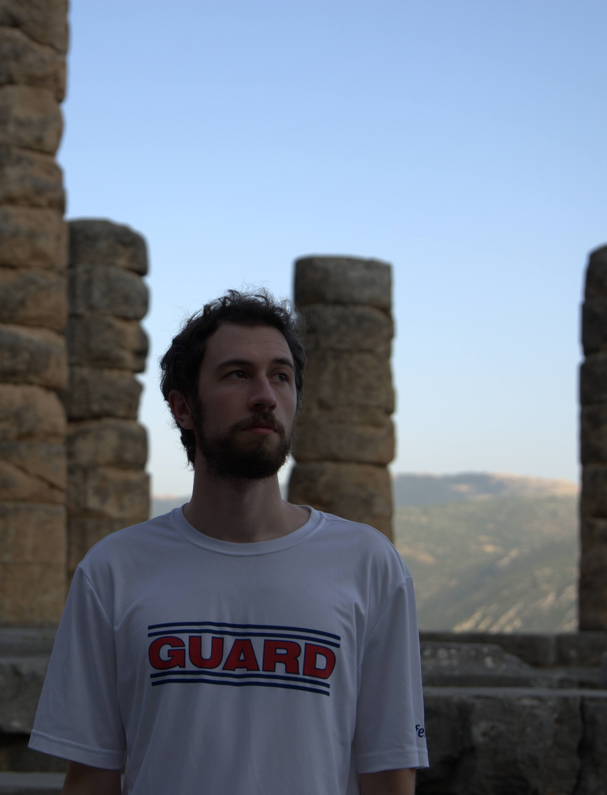

Contact
Email: j[lastname] at utexas dot edu
Jeff Champion
I am a PhD student in computer science at UT Austin working with David Wu. I'm generally interested in theoretical computer science, especially cryptography.
Previously, I majored in math and computer science at Northeastern University, where I was fortunate to be mentored by abhi shelat, Jonathan Ullman, and Christopher King.
Publications & Preprints


- Distributed Monotone-Policy Encryption for DNFs from Lattices
Jeffrey Champion, David J. Wu
EUROCRYPT 2026 ePrint - Untelegraphable Encryption and its Applications
Jeffrey Champion, Fuyuki Kitagawa, Ryo Nishimaki, Takashi Yamakawa
TCC 2025 ePrint arXiv - Registered ABE and Adaptively-Secure Broadcast Encryption from Succinct LWE
Jeffrey Champion, Yao-Ching Hsieh, David J. Wu
CRYPTO 2025 ePrint - Adaptively-Secure Big-Key Identity-Based Encryption
Jeffrey Champion, Brent Waters, David J. Wu
PKC 2025 ePrint - Distributed Broadcast Encryption from Lattices
Jeffrey Champion, David J. Wu
TCC 2024 ePrint - Non-Interactive Zero-Knowledge from Non-Interactive Batch Arguments
Jeffrey Champion, David J. Wu
CRYPTO 2023 ePrint - Securely Sampling Biased Coins with Applications to Differential Privacy
Jeffrey Champion, abhi shelat, Jonathan Ullman
CCS 2019 ePrint GitLab
Teaching & Service
Conference Reviewer: PKC 2026, EUROCRYPT 2026, TCC 2025, CRYPTO 2025, STOC 2025,PKC 2025, TCC 2023, CRYPTO 2022
UT Austin (TA):